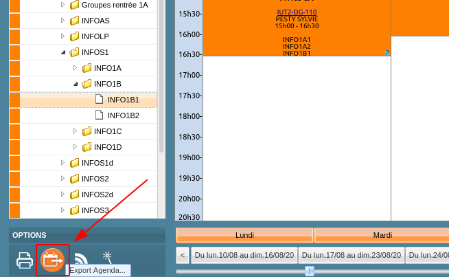
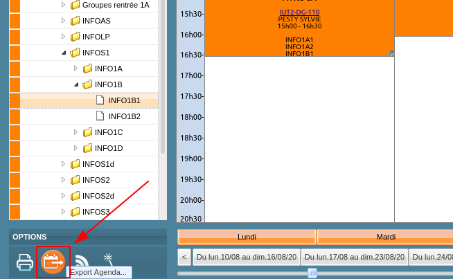

Pour passer d'ADE à un magnifique agenda synchronisé natif, il y a 2 étapes à connaître : récupérer le lien iCal (et il faut le chercher pour le trouver), puis le donner à manger correctement à votre application agenda habituelle (et pour certaines c'est pas évident).
Mais vous verrez, ça se fait !
Obtenir le lien iCal
Commencez par aller consulter ADE (si vous ne connaissez pas encore, c'est par ici)
Sélectionnez votre emploi du temps, puis cliquez sur l'icône Export Agenda en bas à gauche.
 

Dans la fenêtre d'export, choisissez l'intervalle de temps couverte : vous pouvez laisser de la marge, de toute façon un EdT ne dure jamais plus d'un semestre.
Sélectionnez ICalendar (Outlook/Mozilla/Google Calendar/ICal), puis cliquez sur Générer URL (attention, le "Ok" mène simplement vers un téléchargement du fichier .ics, qui ne sera pas dynamique !).
Et voilà, vous avez votre lien ! Vous pouvez le garder dans un fichier texte le temps de voir comment l'entrer dans votre logiciel/appli agenda préféré-e juste après.
Configurer votre application agenda
Ici, on vous explique comment importer le liens iCal dans diverses applications d'agenda. Pour l'instant, quelques unes des plus connues sont répertoriées ; si vous en utilisez une autre, les moteurs de recherche sont vos amis !
Sur la version navigateur, l'ajout se fait littéralement en 4 clics, plutôt pas mal ! Par contre sur l'appli Android... ben c'est pas possible en fait, pas encore implémenté, donc vous devez passer par la version navigateur au moins pour ajouter l'agenda la première fois.
Dans la liste des agendas à gauche, section Autres agendas, cliquez sur le +, puis choisissez À partir de l'URL.
Ensuite... Bon, est-ce qu'il y a vraiment besoin d'explications à ce niveau-là ? Collez votre lien, "Ajouter un agenda", et c'est réglé ; pas besoin de le rendre public.
On peut reconnaître un truc à Google, c'est qu'ils savent faire des interfaces simples. Si vous utilisez l'appli Android, l'agenda devrait être synchronisé.
Outlook
[Section en cours de rédaction...]
Dans l'onglet Calendrier cliquez droit sur la liste des agendas à gauche et choisissez New Calendar.

Choisissez On the Network, puis iCalendar (ICS), et collez le lien d'ADE dans Location.
Donnez-lui le titre et la couleur que vous voulez. L'email est inutile pour un agenda en lecture seule, et il est conseillé de décocher Show Reminders (sauf si vous voulez recevoir une notification à chaque cours...)

Et c'est bon ! (normalement)
Vous pouvez masquer l'agenda en cochant sa case dans la liste de gauche.
Applications Android diverses
Certaines applis agenda gèrent elles-mêmes la synchronisation iCal, mais c'est plutôt rare. La plupart se contentent des agendas locaux Android, en laissant Google Agenda s'occuper de la synchronisation.
- Si vous n'avez rien contre Google et que vous cherchez juste un moyen simple, allez voir la section Google Agenda
- Sinon, quitte à éviter Google Agenda, autant éviter Google tout court : lisez la suite de cette section.
On va donc utiliser une appli de synchronisation iCal dédiée. Je conseille habituellement ICSx5, simple et efficace, qui est gratuite sur F-Droid.
Si vous ne connaissez pas encore, F-Droid est le catalogue d'applis libres et open-source le plus connu. Vous pouvez soit télécharger les APK directement depuis le site, soit utiliser l'appli F-Droid qui facilite les installations et mises à jour.
Une fois ICSx5 installé, l'interface est plutôt explicite : ajoutez un agenda avec +...
... collez votre lien ...
... choisissez un titre et une couleur, et validez.
Dernière chose : définir la fréquence d'actualisation avec Set sync. interval.
A partir de maintenant, vous pouvez utiliser l'agenda Android créé par ICSx5 dans n'importe quelle appli agenda. Et si vous cherchez des suggestions, Etar est un agenda open-source avec une interface Material Design assez propre et fonctionnelle. Avis aux amateurs...
Apple iCalendar
[En l'absence d'appareil Apple, la rédaction est actuellement incapable de documenter cette section. En attendant, les moteurs de recherche sont vos amis...]